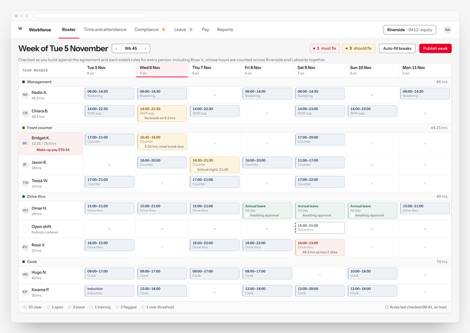
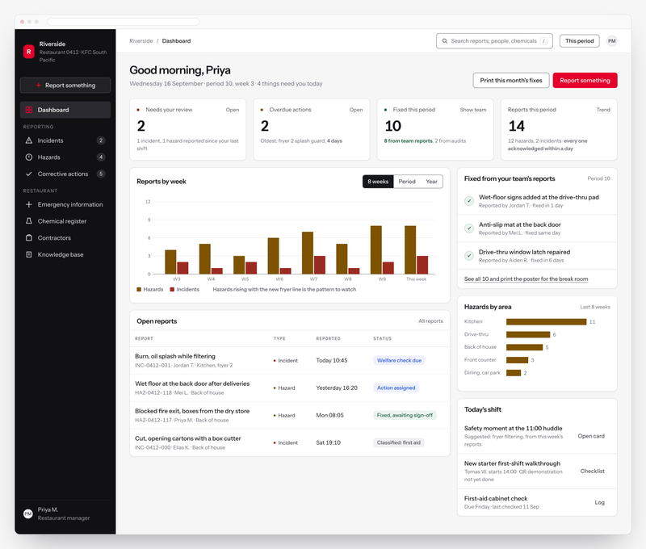
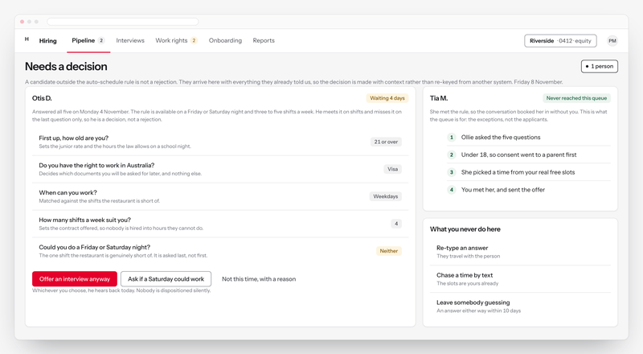
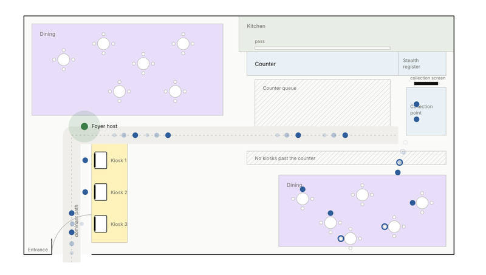
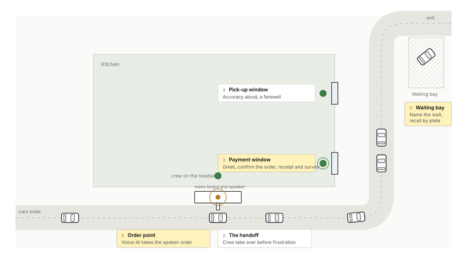
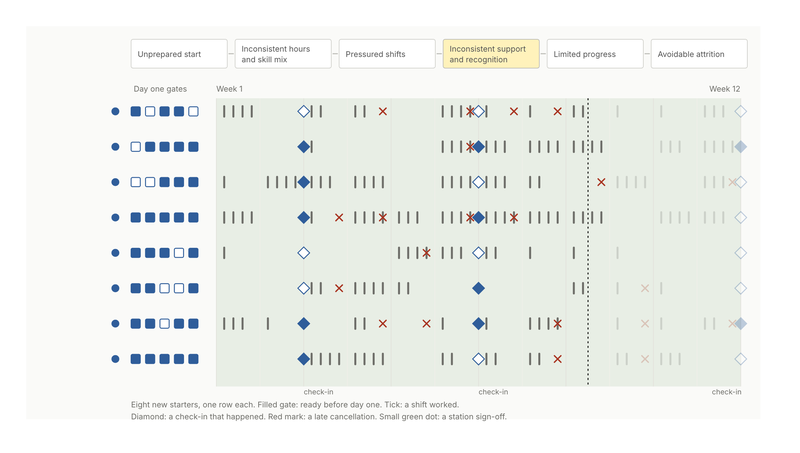
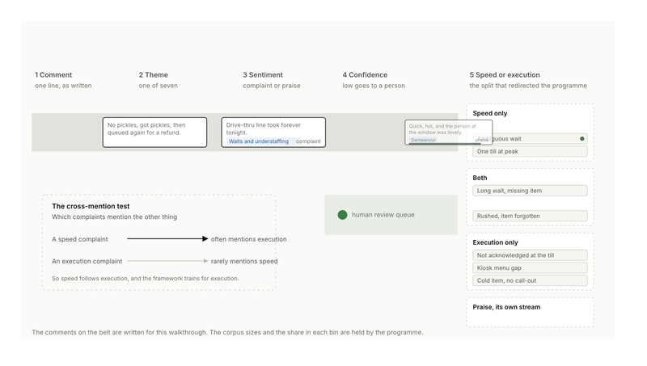

Work
Seven projects across a restaurant network, 2024 to 2026
Employment work at KFC South Pacific, written up with vendors, sites and people removed. Each case says what I did, who I worked with, what was decided, what was delivered or released, and which screens are later concepts.

Workforce platform · 2024Transforming rostering, time and attendance across a billion-dollar restaurant business
Ten restaurant visits, 200 survey responses and an above-restaurant round located 175 pain points. Triaged, blueprinted and scored into a ranked top ten, of which eight were released in the vendor platform across November 2024 and 2025. The nine-module screens are a concept designed in 2026 from the findings.
Co-led the review · eight of ten released by the vendor
Safety and compliance · 2025Transforming safety and compliance reporting across a restaurant network
One reporting platform across 900 restaurants, and no way to tell a safe restaurant from a silent one. The research found the variable that mattered in the sampled restaurants, the tool held the evidence, and the findings report, blueprint and form prototypes were delivered in December 2025. The ten-module screens are a concept designed in 2026.
Led the research and design · delivered December 2025
Hiring and onboarding · 2025Redesigning hiring and onboarding for a restaurant network
Five of the seven moments that matter failed basic expectations, and the wait for a first human touch ran from days to weeks. Nine stages mapped from interviews, then a screening-to-interview workflow specified with human review lanes, so nothing is rejected by a machine and every candidate gets an answer. Implementation sat with technology and the vendor.
Led the design work · specification delivered
Self-service channel · 2024 to 2025Designing the human half of self-service ordering
A floor role, a placement standard and the training that came with them, for a channel that had reached about half the network while its operating model stood still. Brand standards published; enforcement through the audit sat with the standards programme.
Led the design work · standards delivered and published
Drive-thru · 2024 to 2025Keeping the human moment in an AI-run drive-thru
A voice-AI order taker removed the one human moment the channel always guaranteed. Four touchpoints named and trained, a hospitality ritual written for each, and two sequenced pilots designed to test them and run by the programme.
Led the design work · two pilots run
Employee experience · 2026Deciding how to fix the first twelve weeks of a restaurant career
Three separate asks synthesised into one attrition chain, two blueprint options held in deliberate tension, and a decision brief a franchise governance forum settled in one meeting. The forum chose the healthy-shift option first.
Led the design work · forum decision accepted
Service quality · 2025Shifting a service-quality programme from speed to competence
Years of optimising one number while guests kept complaining. Read as one dataset, the complaints were about execution. The decomposition showed it, and the observation instrument and recognition ladder put it on the floor. The drive-thru trial was run by the programme.
Led the design work · trial run by the programmeShowing all seven projects.